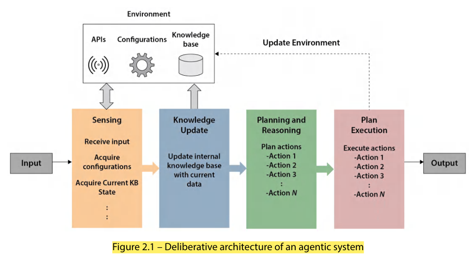
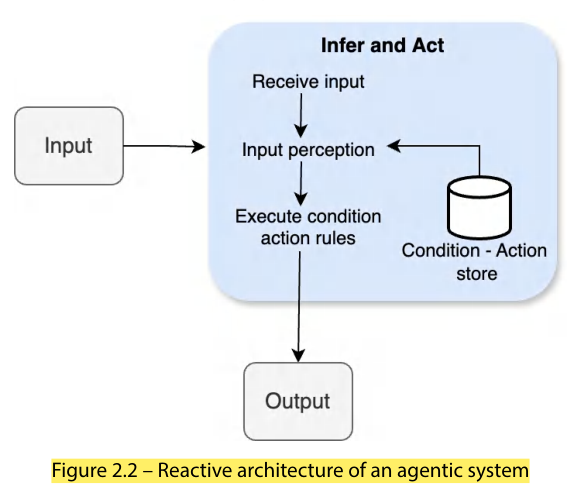
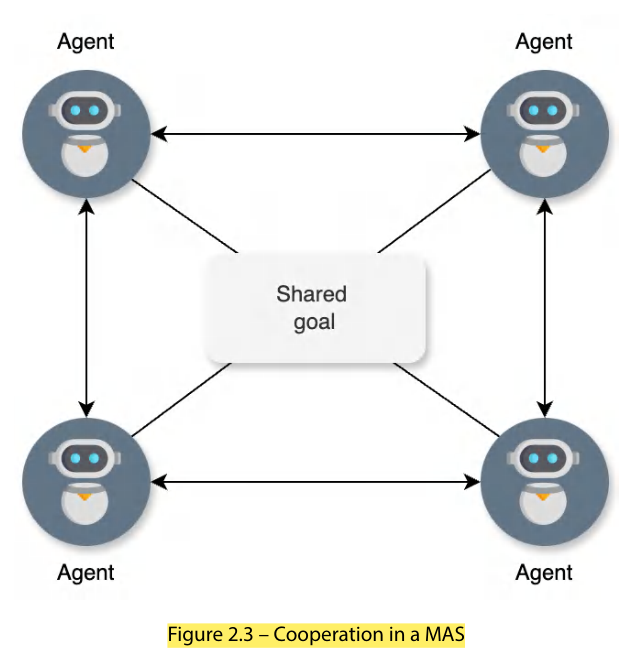
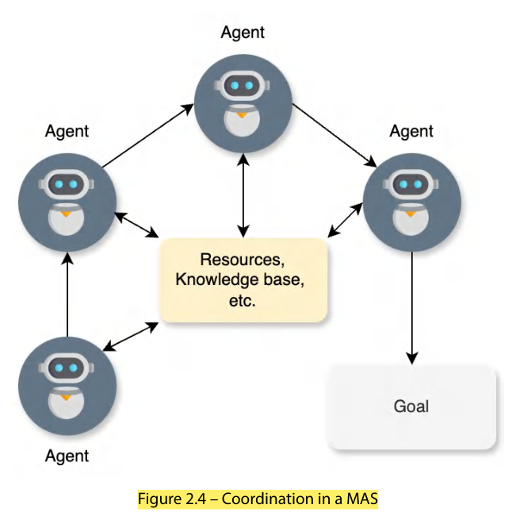
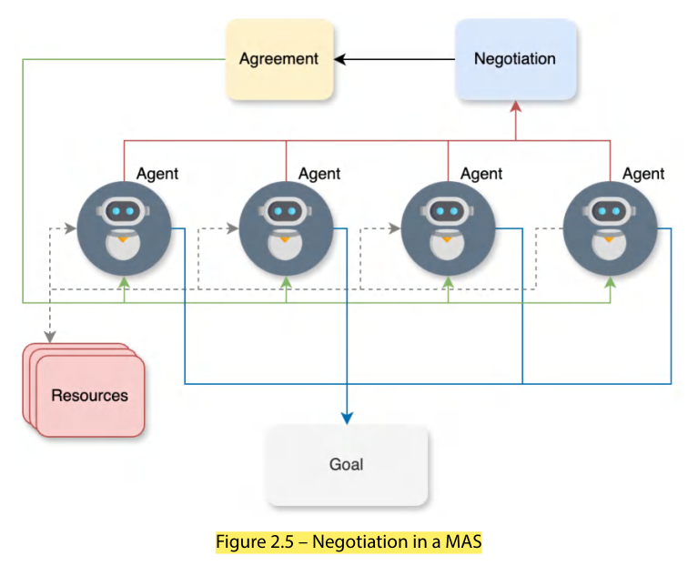
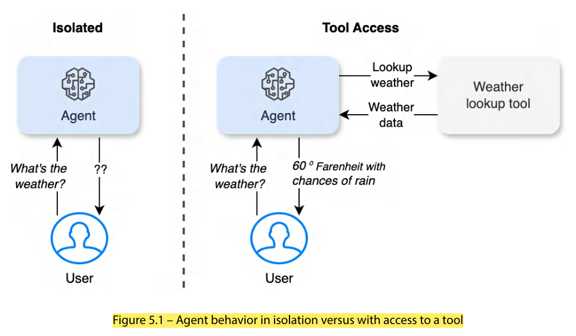
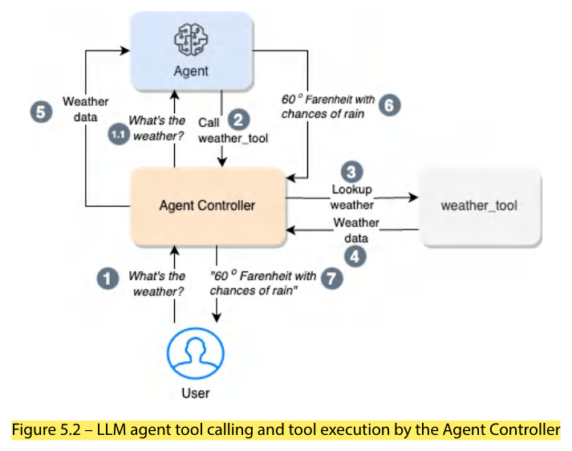

| Characteristic | Meaning |
|---|---|
| Reactivity | Responds in real time to changes/events in the environment; continuously monitors and adjusts → actions stay relevant. |
| Proactiveness | Anticipates needs/challenges/opportunities, takes initiative, goal-oriented; not just reacting. |
| Social ability | Communication, coordination and negotiation with other agents/humans in multi-agent systems; leverages collective intelligence. |
| Learning & adaptation | Learns from experience (machine learning, reinforcement learning, evolutionary algorithms), refines decision-making and improves performance. |
| Reasoning & planning | Analyses complex situations, formulates strategies via knowledge representation, logical inference and planning algorithms. |
| Autonomy & self-governance | Makes decisions/takes actions independently without constant human supervision — vital where continuous human control is impractical or impossible. |
Applications: robotics, decision-support systems, virtual assistants, gaming, simulations.
Agentic systems executing complex goals autonomously use architectural patterns that define the structure and behaviour for perceiving, reasoning, learning and acting. Three main patterns: deliberative, reactive, hybrid.
Relies on explicit representations of knowledge and reasoning to reach decisions; follows the sense → plan → act cycle.

Provides immediate responses to stimuli. No explicit world model or complex reasoning — directly maps perceptions onto actions using simple condition-action rules or neural networks.

| Strengths | Limitations |
|---|---|
|
Speed & responsiveness — coupling perception to action bypasses slow reasoning. Robustness & fault tolerance — less susceptible to noise/incomplete information; simple standalone components. Handling uncertainty — reacts to current situation without a precise world model. Parallel & distributed processing — multiple reactive modules run simultaneously and independently → scalability, modularity. Emergence of complex behaviour from interaction of simple behaviours. |
Lack of long-term planning — focuses on immediate responses; hard to pursue multi-step goals. Limited reasoning & abstraction — struggles with abstract reasoning, generalisation, symbolic manipulation. Limited learning — fixed rules/behaviours, little adaptation over time. |
Widely used where real-time responsiveness, robustness and uncertainty handling matter: robotics, AI video games, control systems; also serve as components inside hybrid architectures.
Combines strengths of deliberative and reactive designs in a layered structure:
Techniques used in hybrid architectures:
| Architecture | Best when |
|---|---|
| Deliberative | Intricate reasoning & decision-making in well-defined scenarios |
| Reactive | Dynamic environments needing swift, adaptive responses |
| Hybrid | Balance of responsiveness and reasoning; more capable, adaptable systems (active research area) |
| Domain | Role of MAS |
|---|---|
| Supply chain management & logistics | Agents for suppliers, manufacturers, distributors, retailers decide locally and collaborate on resource allocation, inventory, transport planning. |
| Traffic control & transportation | Agents = vehicles, traffic lights, management centres; reduce congestion, coordinate signals, find optimal routes. |
| Robotics & manufacturing | Coordinate multiple robots (assembly, welding, material handling) for synchronized operation. |
| Environmental monitoring & resource management | Water distribution, forestry, wildlife conservation; agents = stakeholders, sensors, decision makers. |
| Distributed sensor networks | Each node an agent; local processing + information fusion (surveillance, disaster response). |
| Intelligent virtual environments & simulations | Realistic simulation of social systems, economic models, military operations. |
Key advantages: distributes problem-solving, leverages collective intelligence and specialisation, robustness/fault tolerance via decentralised decisions, integrates heterogeneous components, flexible & scalable — better than monolithic centralised approaches.
| Characteristic | Description |
|---|---|
| Autonomy | Each agent self-governing, decides from its perception and objectives; no centralised control. |
| Interaction | Communicate via defined protocols: share information, negotiate tasks, coordinate actions — cooperation, coordination or competition. |
| Adaptability | Change behaviour when environment or agents' goals change. |
| Distributed control | Decision-making spread over agents; failure of one agent doesn't necessarily affect the whole system. |
| Scalability | Agents can be added/removed as needed. |
| Heterogeneity | Agents may have different architectures, capabilities, goals. |
| Decentralised data & knowledge | Knowledge distributed among agents → no single point of failure; local knowledge-based operation. |
Agents work together toward a common goal; important when no single agent can achieve the objective alone. Agents pool knowledge, resources and efforts — divide tasks, combine expertise, complement abilities. Example: disaster rescue with drones, robots and humans locating victims.

Manages interdependencies from agents' actions — needed when agents share resources, have overlapping responsibilities or conflicting actions. Mechanisms: task scheduling, resource-allocation management, conflict resolution. Example: manufacturing robots on production lines coordinate shared resources, prevent interference, keep efficiency.

Process by which agents reach agreements on sharing resources, dividing tasks or resolving conflicts, through offers, counteroffers and compromises, even when interests initially conflict. Techniques: auctions, voting protocols, bargaining strategies, game-theoretic approaches.

| Mechanism | Purpose | Travel-industry illustration |
|---|---|---|
| Cooperation | Common goal | All agents work to book the traveller's itinerary |
| Coordination | Manage interdependencies | Travel agency agent needs flight + hotel input to build a package |
| Negotiation | Reach mutually beneficial agreements | Airline/hotel agents negotiate schedules, rooms, pricing |
Strategies: auctions, bargaining protocols, game-theory, optimisation; multi-attribute utility functions (travel time, cost, comfort, preferences) rank proposals; iterative offers/counteroffers. Decentralised decisions with global optimisation → resilient to changes in demand, supply, pricing.
Require: Airline agents A={A1..An}, Hotel agents H={H1..Hm}
Ensure: TravelBookingSystem S with Travel Agency agent TA
function RequestTravelPackage(departure, destination, dates):
for each Ai in A: available_flights <- Ai.GetAvailableFlights(...)
for each Hj in H: available_rooms <- Hj.GetAvailableRooms(destination, dates)
packages <- TA.CompilePackages(available_flights, available_rooms)
return packages
function BookTravel(selected_package):
flight_booking <- selected_package.airline.BookFlight()
room_booking <- selected_package.hotel.BookRoom()
if both successful: return CreateBooking(flight_booking, room_booking)
else: return FailureNotification()
function UpdateDynamicPricing(): each Ai.UpdateFlightPrices(); each Hj.UpdateRoomPrices()
while True:
if NewTravelRequest(): packages <- RequestTravelPackage(...)
selected <- TA.PresentOptionsToCustomer(packages)
if selected: booking <- BookTravel(selected); NotifyCustomer(...)
if TimeToUpdatePricing(): UpdateDynamicPricing()

| Function calling | Tool calling |
|---|---|
| LLM generates structured calls to predefined functions within the same runtime; internal tasks (DB lookup, calculation). E.g., fetch a user's profile from a local database. | LLM interacts with external APIs, services or systems for real-time data / specialised tasks. E.g., query a weather API for live updates. |
{ "function": "weather_lookup",
"parameters": { "location": "Boston", "date": "10/01/2024" } }
import requests
def weather_lookup(location: str, date: str) -> dict:
"""A function to lookup weather data that takes location and date as input"""
API_KEY = "api_key"; base_url = "<api URL>"
params = {"q": location, "appid": API_KEY, "units": "imperial"} # Fahrenheit
response = requests.get(base_url, params=params)
if response.status_code == 200:
data = response.json()
return data

Flow (Fig 5.2): (1) user asks "What's the weather?" → agent (1.1) decides to call weather_tool (2) → Agent Controller (3) looks up the tool → (4) weather data returned → (5) data goes to the agent → (6) agent forms the answer ("60°F with chances of rain") → (7) reply to the user.
| Framework approach — docstrings | Direct LLM integration — JSON schema |
|---|---|
| CrewAI / LangGraph: tools are functions with a docstring (purpose, required & optional arguments, return values). Intuitive; standard programming practice (other languages use different doc conventions). | With raw APIs (Anthropic Claude / OpenAI GPT) define tools as JSON with name, description, input_schema (type, properties, required). Multiple tools = list/array of schemas. Model-dependent — cumbersome with many models, hence the rise of CrewAI, LangGraph, AutoGen for model-agnostic definition. |
def weather_lookup(location: str, date: str = None):
"""
A tool that can lookup real-time weather data.
Arguments:
location (str): The location to lookup weather for
date (str) Optional: The date in MM/DD/YYYY format
"""
{ "name": "weather_lookup",
"description": "A tool that can lookup real-time weather data",
"input_schema": { "type": "object",
"properties": { "location": { "type": "string",
"description": "The city and state, e.g. San Francisco, CA" } },
"required": ["location"] } }
| Tool type | Purpose / examples |
|---|---|
| APIs | Primary gateway to external services & real-time data; standardised interaction with third-party systems — weather, payments, navigation/maps, flight & hotel booking. |
| Database tools | Store/retrieve/manage structured or semi-structured data; read & write; persistent info across sessions — customer profiles, transaction history, product catalogs, domain knowledge bases. |
| Utility functions | Custom local software components for specialised tasks — data processing/analysis, format conversion, maths, NLP; consistent, repeatable operations. |
| Integration tools | Connect systems & services for workflow automation — calendar sync, document processing, file management, communication systems; orchestrate multi-system workflows. |
| Hardware interface tools | Bridge digital and physical worlds — IoT devices, robotics, sensor data, physical automation. |
class TravelTools:
def search_flights(self, ...) -> dict:
"""Basic flight search simulation"""
return {"flights": [{"airline": "Alitalian airlines", "price": 800, "duration": "9h"}]}
def check_hotels(self, ...) -> dict:
"""Basic hotel search simulation"""
return {"hotels": [{"name": "Roma Inn", "price": 150, "rating": 4.0}]}
travel_agent = Agent(role='Travel Agent',
goal='Find suitable flight and hotel options within budget',
tools=[TravelTools().search_flights, TravelTools().check_hotels])
search_task = Task(description="Find flights and hotels for 2 adults to Rome, June 15-22, budget $3000",
agent=travel_agent)
crew = Crew(agents=[travel_agent], tasks=[search_task])
result = crew.kickoff()
Concepts shown: tool definition (TravelTools class), agent configuration (role, goal, tools), task specification, tool integration (flight + hotel), execution flow managed by CrewAI. Real implementations would use real APIs/databases and richer data.
Planning lets agents reason about actions and devise strategies. An algorithm = step-by-step, unambiguous, finite instructions that take inputs and produce an expected output in finite time. For LLM agents, practicality depends on handling natural language, uncertainty and large state spaces (all possible conversation states, knowledge contexts and responses — far larger than e.g. robot positions/orientations).
| Practicality for LLM agents | Algorithms |
|---|---|
| Less practical | STRIPS, A*, GraphPlan, MCTS — rigid structure, difficulty with natural language |
| Moderately practical | Fast Forward (FF) — needs significant adaptation |
| Most practical | LLM-based planning and HTN (hierarchical task network) — align with how LMs process/decompose tasks (covered in Unit 3) |
| Algorithm | Idea | Why impractical for LLM agents |
|---|---|---|
| STRIPS (Stanford Research Institute Problem Solver) | States and actions defined by logical predicates; clear binary (true/false) conditions. | Natural language can't be reduced to true/false; can't model nuanced states ("partially understanding a concept", "somewhat satisfied") — too rigid. |
| A* planning | Pathfinding using action cost + heuristic estimate of remaining cost. | Defining costs/"distance" between conversation states is highly problematic; mathematical requirements don't fit language. |
| GraphPlan | Builds a layered graph of actions & effects per time step. | Language interactions don't fit discrete layers with clear cause-effect; combinatorial explosion; hard to find mutual-exclusion relationships → computationally intractable. |
| MCTS (Monte Carlo Tree Search) | Random simulations — strong in game-like scenarios. | Each simulation needs real LLM calls (prohibitively expensive); vast language space makes random sampling inefficient. |
FF uses heuristic search with a relaxed (simplified) version of the planning problem to guide search. Its goal-oriented approach aligns with LLM task completion, and its relaxed plans approximate complex language tasks; heuristic guidance manages huge search spaces; flexible with partial state descriptions. Challenges: numeric heuristics don't translate to language states; relaxed plans may oversimplify; defining delete effects (what is removed/changed in the conversation state) is hard; state representation needs adaptation. (Full discussion + code in Unit 3.)